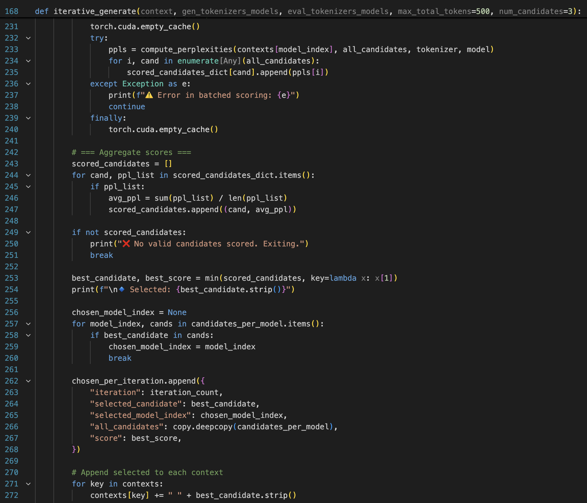

Preprint
ArXiv

Source Code
Github
Generalization of Chain of Thoughts (CoTs)
While models and humans naturally explain concepts differently, we explore something more fundamental: can reasoning chains serve as stable, interpretable guides that lead different AI systems to consistent answers? A good explanation isn't just correct—it should be learnable. If we give an explanation to another agent, they should understand it and draw the intended conclusions. We quantify this through cross-model CoT generalization.
We find that explanations can generalize across models, though effectiveness varies significantly by which models are involved. Ensembled explanations often improve consistency, and more consistent explanations correlate with higher human preference.
Approach
We test four methods for eliciting and using reasoning explanations across models:
(A) Empty CoT: No reasoning provided (baseline)
(B1) Default CoT: Model uses its own reasoning with deterministic decoding
(B2) Sampled CoT: Model uses its own reasoning with nucleus sampling
(C) Transfer CoT: One model's reasoning is transferred to another model
(D) Ensemble CoT: Multiple models generate candidate sentences, and an evaluator selects the least surprising option at each step. The selected sentence is added to context and the process repeats until thinking end tag is generated.
For a generator model lgen and problem x, we elicit a reasoning explanation z = lgen(x) within thinking tags before the model produces an answer. We then test whether this explanation generalizes by giving it to a different evaluator model leval and measuring if it reaches the same conclusion. To isolate the effect of reasoning rather than answer copying, we remove explicit answer declarations from explanations using an LLM filter.
Evaluation Setup
We evaluate these methods across 5 large reasoning models — NRR (1.5B), OpenT (7B), OSS (20B), QwQ (32B), and DAPO (32B) — on two benchmarks:
- MedCalc-Bench: 100 medical calculation tasks requiring domain-specific reasoning
- Instruction Induction: 100 samples across 20 general reasoning tasks (extended with 12 new tasks)
We measure generalization of CoT through consistency (do models reach the same conclusion?) and track its effect on accuracy (is that conclusion correct?).
Matching Model Responses
The figure above shows average pairwise consistency across different CoT methods. Transfer and ensemble approaches substantially increase consistency compared to default or empty baselines.
Key findings:
- Ensemble methods boost consistency: Using multiple models to generate and evaluate candidates achieves higher consistency than single-model approaches
- Model choice matters: The effectiveness of transfer and ensemble methods varies significantly depending on which models serve as generators versus evaluators
- Pattern holds across benchmarks: Both MedCalc-Bench and Instruction Induction show similar trends, with ensemble and transfer methods outperforming baselines
These results suggest that models whose explanations transfer well to others also tend to be effective generators in ensemble settings.
Impact on Accuracy
While CoT increases consistency, its effect on accuracy varies. Some CoT methods successfully correct errors (Wrong→Correct), while others can mislead models from correct to incorrect predictions (Correct→Wrong). The balance between these outcomes depends on both the CoT method and the models involved.
Notable patterns: Ensemble and certain transfer methods show higher rates of error correction, though no method universally improves accuracy across all model pairs. This highlights the importance of considering both consistency and accuracy when evaluating CoT generalization.
Human Preference Study
We conducted a user study with 15 participants (computer science and healthcare researchers) who rated CoT explanations on clarity, ease of following, and confidence. The results reveal a key finding: consistency between models is a better predictor of human preference than accuracy.
This suggests that explanations which generalize well across models—leading different systems to the same conclusion—are also more convincing and understandable to human users. Ensemble methods, which achieved the highest consistency, also received the best ratings across all evaluation criteria.
Related Work
Our work builds upon insights in other work that has examined ways to generate, improve, assess and evaluate explanations:
Notes: Introduces chain-of-thought prompting and shows that generating intermediate reasoning steps dramatically improves language model performance on complex reasoning tasks.
Notes: Demonstrates that reasoning models often fail to verbalize their actual reasoning processes in CoTs, with reveal rates frequently below 20%, highlighting fundamental challenges in using CoT monitoring for AI safety.
Notes: Distinguishes faithfulness from plausibility and argues for graded rather than binary faithfulness metrics.
How to Cite
This work is available on arXiv and can be cited as follows:
Bibliography
Koyena Pal, David Bau, and Chandan Singh. "Do Explanations Generalize across Large Reasoning Models?" arXiv preprint arXiv:2601.11517, (2026).
BibTeX
@misc{pal2026explanationsgeneralizelargereasoning,
title={Do explanations generalize across large reasoning models?},
author={Koyena Pal and David Bau and Chandan Singh},
year={2026},
eprint={2601.11517},
archivePrefix={arXiv},
primaryClass={cs.CL},
url={https://arxiv.org/abs/2601.11517},
}